«Семейный портрет» Солнечной системы


radius: {{convert|69911|km|mi|0|abbr|=|unit}} diameter: None
{{plainlist |
* |convert|1.8982e27|kg|lb|sigfig|=|5|abbr|=|unit|
* |val|317.8|u|=|Earths|
* 1/1047 Sun|ref| name=ssd-constants|{{cite web |title=Astrodynamic Constants |publisher=JPL Solar System Dynamics |date=February 27, 2009 |url=http://ssd.jpl.nasa.gov/?constants |accessdate=August 8, 2007}}||}} {{convert|1.8982e27|kg|lb|sigfig|=|5|abbr|=|unit}} * {{val|317.8|u|=|Earths}} * 1/1047 Sun
None
{{plainlist |
* |val|11.862|u|=|[[julian year (astronomy)|yr]]|
* |val|fmt|=|commas|4332.59|u|=|days|
* |val|fmt|=|commas|10475.8|u|=|Jovian [[solar day]]s|ref| name="planet_years"|{{cite web |url=http://cseligman.com/text/sky/rotationvsday.htm |title=Rotation Period and Day Length |last=Seligman |first=Courtney |accessdate=August 13, 2009}}||}} {{val|11.862|u|=|[[julian year (astronomy)|yr]]}} * {{val|fmt|=|commas|4332.59|u|=|days}} * {{val|fmt|=|commas|10475.8|u|=|Jovian [[solar day]]s}}

radius: {{convert|58232|km|mi|0|abbr|=|unit}} diameter: None
{{plainlist |
* |val|5.6834e26|u|=|kg|
* |val|95.159|u|=|Earths|}} {{val|5.6834e26|u|=|kg}} * {{val|95.159|u|=|Earths}}
None
{{plainlist |
* |val|29.4571|u|=|[[Julian year (astronomy)|yr]]|
* |val|fmt|=|commas|10759.22|u|=|days|
* |val|fmt|=|commas|24491.07| Saturnian [[solar day]]s|ref| name="CSeligman" |}} {{val|29.4571|u|=|[[Julian year (astronomy)|yr]]}} * {{val|fmt|=|commas|10759.22|u|=|days}} * {{val|fmt|=|commas|24491.07}} Saturnian [[solar day]]s

radius: {{nowrap|val|fmt|=|commas|25362|7|u|=|km}} {{val|fmt|=|commas|25362|7|u|=|km}} {{efn|name|=|atmospheric pressure}} diameter: None
{{val|8.6810|0.0013|e|=|25|u|=|kg}}
14.536 Earths
[[standard gravitational parameter|GM]]= {{nowrap|val|fmt|=|commas|5793939|13|u|=|km3/s2}} {{val|fmt|=|commas|5793939|13|u|=|km3/s2}}
14.536 Earths
[[standard gravitational parameter|GM]]= {{nowrap|val|fmt|=|commas|5793939|13|u|=|km3/s2}} {{val|fmt|=|commas|5793939|13|u|=|km3/s2}}
{{#time:F j, Y|#property:P575}} {{#property:P575}}
{{plainlist |
* |val|84.0205|u|=|[[julian year (astronomy)|yr]]|
* |nowrap|val|fmt|=|commas|30688.5|u|=|days|ref| name="nasafact" |
* |nowrap|val|fmt|=|commas|42718| Uranian [[solar day]]s|ref| name="CSeligman" |}} {{val|84.0205|u|=|[[julian year (astronomy)|yr]]}} * {{nowrap|val|fmt|=|commas|30688.5|u|=|days}} {{val|fmt|=|commas|30688.5|u|=|days}} * {{nowrap|val|fmt|=|commas|42718}} Uranian [[solar day]]s {{val|fmt|=|commas|42718}}

radius: {{nowrap|val|fmt|=|commas|24622|19|u|=|km}} {{val|fmt|=|commas|24622|19|u|=|km}} diameter: None
{{val|1.02413|e|=|26|u|=|kg}}
17.147 Earths
5.15 {{e|-5}} Suns
17.147 Earths
5.15 {{e|-5}} Suns
23.09.1846
{{plainlist|
* 164.8 [[julian year (astronomy)|yr]]
* 60,182 days
* 89,666 Neptunian [[solar day]]s|ref| name="planet_years"|{{cite web |last=Seligman |first=Courtney |url=http://cseligman.com/text/sky/rotationvsday.htm |title=Rotation Period and Day Length |accessdate=13 August 2009 |archive-url=https://www.webcitation.org/60qT3Ukn5?url=http://cseligman.com/text/sky/rotationvsday.htm |archive-date=11 August 2011 |url-status=live }}||}}

radius: {{convert|6371.0|km|mi|comma|=|gaps|abbr|=|on|disp|=|x| (|)}} diameter: None
{{val|5.97237|e|=|24|u|=|kg}} ( {{val|1.31668|e|=|25|u|=|lb}} )
( {{val|3.0|e|=|-6|ul|=|solar mass}} )
( {{val|3.0|e|=|-6|ul|=|solar mass}} )
None
{{convert|365.256363004|d|years|comma|=|gaps|abbr|=|on|lk|=|out|disp|=|x|ref| name="IERS" |
(|)}}
(
(|)}}
(

radius: {{plainlist |
* |nowrap|val|fmt|=|commas|6051.8|1.0|u|=|km|ref| name="Seidelmann2007" |
* |val|0.9499|u|=|Earths|}} {{nowrap|val|fmt|=|commas|6051.8|1.0|u|=|km}} {{val|fmt|=|commas|6051.8|1.0|u|=|km}} * {{val|0.9499|u|=|Earths}} diameter: None
{{plainlist |
* |val|4.8675|e|=|24|u|=|kg|ref| name="Konopliv1999" |
* 0.815 Earths}} {{val|4.8675|e|=|24|u|=|kg}} * 0.815 Earths
None
{{plainlist |
* |val|224.701|u|=|day|ref| name="fact" |
* |val|0.615198|u|=|[[julian year (astronomy)|yr]]|
* 1.92 Venus [[solar day]]}} {{val|224.701|u|=|day}} * {{val|0.615198|u|=|[[julian year (astronomy)|yr]]}} * 1.92 Venus [[solar day]]

radius: {{convert|3389.5|±|0.2|km|mi|1|comma|=|gaps|abbr|=|on|disp|=|x|efn|name|=|best-fit ellipsoid| |ref| name="Seidelmann2007" |
(|)}} {{efn|name|=|best-fit ellipsoid}}
( diameter: None
(|)}} {{efn|name|=|best-fit ellipsoid}}
( diameter: None
{{val|6.4171|e|=|23|u|=|kg}}
(0.107 Earths)
(0.107 Earths)
None
{{convert|686.971|d|years|comma|=|gaps|abbr|=|on|lk|=|out|disp|=|x|
(|; |val|668.5991| [[timekeeping on Mars|sols]])}} {{val|668.5991}} [[timekeeping on Mars|sols]])
(|; |val|668.5991| [[timekeeping on Mars|sols]])}} {{val|668.5991}} [[timekeeping on Mars|sols]])

radius: {{val|2634.1|0.3|u|=|km}} (0.413 Earths) diameter: None
{{val|1.4819|e|=|23|u|=|kg}} (0.025 Earths)
07.01.1610
{{val|7.15455296|ul|=|d}}

radius: {{val|2574.73|0.09|u|=|km}} (0.404 [[Earth]]s) (1.480 [[Moon]]s) diameter: None
{{val|1.3452|0.0002|e|=|23|u|=|kg}}
(0.0225 Earths) (1.829 Moons)
(0.0225 Earths) (1.829 Moons)
25.03.1655
{{val|15.945|u|=|days}}

radius: {{plainlist |
* |nowrap|val|fmt|=|commas|2439.7|1.0|u|=|km|ref| name="nasa" |ref| name="Seidelmann2007" |
* |val|0.3829| Earths}} {{nowrap|val|fmt|=|commas|2439.7|1.0|u|=|km}} {{val|fmt|=|commas|2439.7|1.0|u|=|km}} * {{val|0.3829}} Earths diameter: {{val|4880|u|=|km}}
{{plainlist |
* |val|3.3011|e|=|23|u|=|kg|ref| name="Mazarico2014" |
* 0.055 Earths}} {{val|3.3011|e|=|23|u|=|kg}} * 0.055 Earths
None
{{plainlist |
* 87.969 1 [[day|d]]
* 0.240 846 [[julian year (astronomy)|yr]]
* 0.5 Mercury [[solar day]]}}

radius: {{val|2410.3|1.5|u|=|km}} (0.378 Earths) diameter: None
{{val|1.075938|0.000137|e|=|23|u|=|kg}} (0.018 Earths)
07.01.1610
{{val|16.6890184|ul|=|d}}
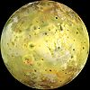
radius: {{val|1821.6|.5|u|=|km}} (0.286 Earths) diameter: None
{{val|8.931938|.000018|e|=|22|u|=|kg}} (0.015 Earths)
08.01.1610
{{val|1.769137786|u|=|d}} ( {{val|152853.5047|u|=|s}} , {{val|42.45930686|u|=|h}} )
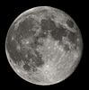
radius: {{nowrap |val |1737.4 |u|=|km|nbsp |2|smaller |
(0.2727 of Earth's)|ref| name="W06"|ref| name="NSSDC"|ref|{{cite journal |last1=Smith |first1=David E. |last2=Zuber |first2=Maria T. |last3=Neumann |first3=Gregory A. |last4=Lemoine |first4=Frank G. |title=Topography of the Moon from the Clementine lidar |journal=[[Journal of Geophysical Research]] |date=1 January 1997 |volume=102 |issue=E1 |page=1601 |doi=10.1029/96JE02940 |bibcode=1997JGR...102.1591S|hdl=2060/19980018849|hdl-access=free |url=https://semanticscholar.org/paper/9cdbb161f908e6cc4e5c55c4daee9f766743c400 }}|}} {{val |1737.4 |u|=|km}} {{nbsp |2}} {{smaller |
(0.2727 of Earth's)}} diameter: None
(0.2727 of Earth's)|ref| name="W06"|ref| name="NSSDC"|ref|{{cite journal |last1=Smith |first1=David E. |last2=Zuber |first2=Maria T. |last3=Neumann |first3=Gregory A. |last4=Lemoine |first4=Frank G. |title=Topography of the Moon from the Clementine lidar |journal=[[Journal of Geophysical Research]] |date=1 January 1997 |volume=102 |issue=E1 |page=1601 |doi=10.1029/96JE02940 |bibcode=1997JGR...102.1591S|hdl=2060/19980018849|hdl-access=free |url=https://semanticscholar.org/paper/9cdbb161f908e6cc4e5c55c4daee9f766743c400 }}|}} {{val |1737.4 |u|=|km}} {{nbsp |2}} {{smaller |
(0.2727 of Earth's)}} diameter: None
{{nowrap |val |7.342 |e|=|22 |u|=|kg|nbsp |2|smaller |
(|val |0.012300| of Earth's)|ref| name="W06"|ref| name="NSSDC"}} {{val |7.342 |e|=|22 |u|=|kg}} {{nbsp |2}} {{smaller |
(|val |0.012300| of Earth's)|ref| name="W06"|ref| name="NSSDC"}} {{val |0.012300}} of Earth's) {{Sfn|Terry|2013|p|=|226}}
(|val |0.012300| of Earth's)|ref| name="W06"|ref| name="NSSDC"}} {{val |7.342 |e|=|22 |u|=|kg}} {{nbsp |2}} {{smaller |
(|val |0.012300| of Earth's)|ref| name="W06"|ref| name="NSSDC"}} {{val |0.012300}} of Earth's) {{Sfn|Terry|2013|p|=|226}}
None
{{longitem |class|=|nowrap |val |27.321661 |ul|=|d|
|smaller |(27 d 7 h 43 min 11.5 s|ref| name="W06"|)}} {{val |27.321661 |ul|=|d}}
{{smaller |(27 d 7 h 43 min 11.5 s|ref| name="W06"|)}} )
|smaller |(27 d 7 h 43 min 11.5 s|ref| name="W06"|)}} {{val |27.321661 |ul|=|d}}
{{smaller |(27 d 7 h 43 min 11.5 s|ref| name="W06"|)}} )
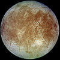
radius: {{val|1560.8|.5|u|=|km}} (0.245 [[Earth]]s) diameter: None
{{val|4.799844|.000013|e|=|22|u|=|kg}} (0.008 Earths)
08.01.1610
{{val|3.551181|u|=|d}}

radius: {{val|1353.4|0.9|u|=|km}} ( {{Earth radius|0.2122}} ) diameter: None
{{val|2.1390|0.0028|e|=|22|u|=|kg}}
( {{val|0.00359|u|=|Earths}} )
( {{val|0.00359|u|=|Earths}} )
10.10.1846
{{val|5.876854|u|=|d}}
([[Retrograde and direct motion|retrograde]])
([[Retrograde and direct motion|retrograde]])

radius: {{plainlist |
* |nowrap|val|fmt|=|commas|1188.3|0.8|u|=|km|ref| name = "Pluto System after New Horizons"|{{Cite journal|last=Stern |first=S. A. |last2=Grundy |first2=W. |last3=McKinnon |first3=W. B. |last4=Weaver |first4=H. A. |last5=Young |first5=L. A.|title=The Pluto System After New Horizons|journal=Annual Review of Astronomy and Astrophysics |volume=2018 |pages=357–392 |arxiv=1712.05669 |year=2017 |doi=10.1146/annurev-astro-081817-051935 }}||ref| name="Nimmo2017"|{{cite journal |last1=Nimmo |first1=Francis |displayauthors=etal |title=Mean radius and shape of Pluto and Charon from New Horizons images|journal=Icarus |date=2017 |volume=287 |pages=12–29 |doi=10.1016/j.icarus.2016.06.027|bibcode=2017Icar..287...12N |arxiv=1603.00821}}||
* 0.1868 [[Earth radius|Earths]]}} {{nowrap|val|fmt|=|commas|1188.3|0.8|u|=|km}} {{val|fmt|=|commas|1188.3|0.8|u|=|km}} * 0.1868 [[Earth radius|Earths]] diameter: None
{{plainlist |
* |val|1.303|0.003|e |=| 22|u|=|kg|ref| name="Stern2015"|{{cite journal |last1=Stern |first1=S. A. |displayauthors=etal |title=The Pluto system: Initial results from its exploration by New Horizons |journal=[[Science (journal)|Science]] |date=2015 |volume=350 |issue=6258 |pages=249–352 |doi=10.1126/science.aad1815 |bibcode=2015Sci...350.1815S |pmid=26472913 |arxiv=1510.07704}}|||
* |val|0.00218|u|=|[[Earth mass|Earths]]|fmt|=|none|
* 0.177 [[Moon mass|Moons]]}} {{val|1.303|0.003|e |=| 22|u|=|kg}} * {{val|0.00218|u|=|[[Earth mass|Earths]]|fmt|=|none}} * 0.177 [[Moon mass|Moons]]
18.02.1930
{{plainlist |
* |val|247.94| [[julian year (astronomy)|years]]|ref| name="Pluto Fact Sheet" |
* |nowrap|val|fmt|=|commas|90560|u|=|days|ref| name="Pluto Fact Sheet" |
|
|}} {{val|247.94}} [[julian year (astronomy)|years]] * {{nowrap|val|fmt|=|commas|90560|u|=|days}} {{val|fmt|=|commas|90560|u|=|days}}

radius: {{val|1163|6|u|=|km}} diameter: {{val|2326|12|u|=|km}}
{{plainlist |
* |val|1.66|0.02|e|=|22|u|=|kg|ref| name="Brown Schaller 2007" |
* 0.0028 [[Earth mass|Earths]]
* 0.23 [[Moon mass|Moons]]}} {{val|1.66|0.02|e|=|22|u|=|kg}} * 0.0028 [[Earth mass|Earths]]
* 0.23 [[Moon mass|Moons]]
05.01.2005
{{plainlist |
* |nowrap|val|fmt|=|commas|203645|u|=|days|
* |val|557.55|u|=|[[Julian year (astronomy)|yr]]|}} {{nowrap|val|fmt|=|commas|203645|u|=|days}} * {{val|fmt|=|commas|203645|u|=|days}} {{val|557.55|u|=|[[Julian year (astronomy)|yr]]}}

radius: {{val|798|6|u|=|km}} per above to {{val|816|u|=|km}} if ring contributes 5% of brightness
{{val|620|+34|-29|u|=|km}} (Herschel)
690 km diameter: None
{{val|620|+34|-29|u|=|km}} (Herschel)
690 km diameter: None
{{val|4.006|0.040|e|=|21|u|=|kg}}
{{val|0.00066|u|=|[[Earth mass|Earths]]}}
{{val|0.00066|u|=|[[Earth mass|Earths]]}}
2004 December 28 (Brown et al.); 2005 July 27 (Ortiz et al.)
284.80 [[Julian year (astronomy)|yr]] ( {{val|104024|ul|=|d}} )
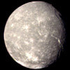
radius: {{val|788.4|0.6|u|=|km}} ( {{val|0.1235|u|=|Earths}} ) diameter: None
{{val|3.400|0.061|e|=|21|u|=|kg}}
11.01.1787
{{val|8.706234|u|=|d}}
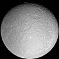
radius: None diameter: {{val|1527.6|2.0|u|=|km}}
{{val|2.306518|0.000353|e|=|21|u|=|kg}} (~3.9 {{e|-4}} Earths)
23.12.1672
{{val|4.518212|u|=|[[Day|d]]}}
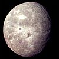
radius: {{val|761.4|2.6|u|=|km}} ( {{val|0.1194|u|=|Earths}} ) diameter: None
{{val|3.076|0.087|e|=|21|u|=|kg}}
11.01.1787
{{val|13.463234|u|=|[[Day|d]]}}
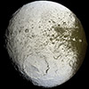
radius: {{val|736.5|2.8|u|=|km}} diameter: {{val|1469.0|5.6|u|=|km}}
{{val|1.805635|0.000375|e|=|21|u|=|kg}}
25.10.1671
{{val|79.3215|u|=|[[Day|d]]}}
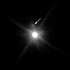
None
{{val|3.1|e|=|21|u|=|kg|p|=|≈}}
31.03.2005
307.53 [[Julian year (astronomy)|yr]] (112,327 [[day|d]])

radius: None diameter: {{val|1230|50|ul|=|km}}
{{val|1.75|0.07|e|=|21|u|=|kg}}
17 July 2007 {{efn|Discovery was announced two years later on 7 January 2009.}}
553.05 [[Julian year (astronomy)|yr]] (202,003 days)

radius: {{val|606.0|0.5|u|=|km}} {{nowrap|(0.095 Earths, 0.51 Plutos)}} diameter: None
{{val|1.586|0.015|e|=|21|u|=|kg}}
( {{val|2.66|e|=|-4|u|=|Earths}} )
(12.2% of Pluto)
( {{val|2.66|e|=|-4|u|=|Earths}} )
(12.2% of Pluto)
22.06.1978
{{val|6.3872304|0.0000011|u|=|d}}
(6 d, 9 h, 17 m, 36.7 ± 0.1 s)
(6 d, 9 h, 17 m, 36.7 ± 0.1 s)

radius: {{val|584.7|2.8|u|=|km}} (0.092 Earths) diameter: None
{{val|1.275|0.028|e|=|21|u|=|kg}}
24.10.1851
{{val|4.144|u|=|[[Day|d]]}}

radius: {{val|578.9|0.6|u|=|km}} ( {{val|0.0908|u|=|Earths}} ) diameter: None
{{val|1.251|0.021|e|=|21|u|=|kg}}
24.10.1851
{{val|2.520|ul|=|d}}
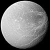
radius: {{val|561.4|0.4|u|=|km}} diameter: {{val|1122.8|0.8|u|=|km}}
{{val|1.095452|0.000168|e|=|21|u|=|kg}} (1.834 {{e|-4}} Earths)
21.03.1684
{{val|2.736915|u|=|d}}

radius: {{val|560.5|0.6|u|=|km}} diameter: {{val|1121|1.2|u|=|km}}
{{val|1.40|0.21|e|=|21|u|=|km}}
05.06.2002
288.78 [[Julian year (astronomy)|yr]] (105,416 [[Day|d]])

radius: {{val|531.1|0.6|u|=|km}} diameter: {{val|1062.2|1.2|u|=|km}} (0.083 Earths) {{sfn|Roatsch Jaumann et al.|2009|p|=|765|loc|=|Tables 24.1–2}}
{{val|6.17449|0.00132|e|=|20|u|=|kg}} {{sfn|Jacobson Antreasian et al.|2006}} (1.03 {{e|-4}} Earths)
21.03.1684
{{val|1.887802|u|=|[[day|d]]}}

None
None
14.11.2003
{{val|10505|18|u|=|[[Julian year (astronomy)|yr]]}} {{refn|1|=|Given the [[orbital eccentricity]] of this object, different [[Epoch (astronomy)|epochs]] can generate quite different heliocentric unperturbed [[Two-body problem|two-body]] [[curve fitting|best-fit]] solutions to the orbital period. Using a 1990 epoch, Sedna has a 12,100-year period,|ref| name="DES" | but using a 2017 epoch Sedna has a 10,900-year period.|ref| name="jpldata" | For objects at such high eccentricity, the Sun's [[Barycentric coordinates (astronomy)|barycentric coordinates]] are more stable than heliocentric coordinates.|ref| name="Kaib2009" | Using [[JPL Horizons On-Line Ephemeris System|JPL Horizons]], the barycentric orbital period is approximately 11,400 years.|ref| name="barycenter" |name|=|footnoteG|group|=|lower-alpha}} but using a 2017 epoch Sedna has a 10,900-year period. For objects at such high eccentricity, the Sun's [[Barycentric coordinates (astronomy)|barycentric coordinates]] are more stable than heliocentric coordinates. Using [[JPL Horizons On-Line Ephemeris System|JPL Horizons]], the barycentric orbital period is approximately 11,400 years.
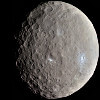
radius: {{val|469.73|u|=|km}} diameter: {{val|939.4|0.2|u|=|km}}
{{val|9.3835|e|=|20|u|=|kg|0.0001}}
{{val|0.00015|u|=|[[Earth mass|Earths]]}}
0.0128 [[Moon]]s
{{val|0.00015|u|=|[[Earth mass|Earths]]}}
0.0128 [[Moon]]s
01.01.1801
4.61 [[julian year (astronomy)|yr]]
{{val|1683.14570801|u|=|d}}
{{val|1683.14570801|u|=|d}}

radius: None diameter: {{val|934|47|u|=|km}}
{{val|726|123|u|=|km}} (thermal)
{{val|726|123|u|=|km}} (thermal)
None
18.06.2002
272.29 [[Julian year (astronomy)|yr]] (99,386 [[Julian year (astronomy)|d]])

None
{{val|6.348|0.019|e|=|20|u|=|kg}} (system)
17.02.2004
246.06 [[Julian year (astronomy)|yr]] (89,873 days)

radius: None diameter: {{val|846|21|u|=|km}} (Salacia alone)
{{val|893|22|u|=|km}} (combined volume of Salacia/Actaea)
{{val|854|45|u|=|km}} (equal albedos)
{{val|893|22|u|=|km}} (combined volume of Salacia/Actaea)
{{val|854|45|u|=|km}} (equal albedos)
{{val|4.922|0.071|e|=|20|u|=|kg}} (system)
{{val|4.38|0.16|e|=|20|u|=|kg}} (system mass)
{{val|4.38|0.16|e|=|20|u|=|kg}} (system mass)
22.09.2004
271.68 [[Julian year (astronomy)|yr]] (99,233 days)

radius: None diameter: {{val|525.4|0.2|u|=|km}}
None
29.03.1807
3.63 [[Julian year (astronomy)|yr]] ( {{val|1325.75|u|=|d}} )

radius: {{val|252.1|0.2|u|=|km}} ( {{val|0.0395}} Earths, {{val|0.1451}} Moons) diameter: None
{{val|1.08022|0.00101|e|=|20|u|=|kg}} (1.8 {{e|-5}} Earths)
28.08.1789
{{val|1.370218|u|=|days}}
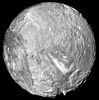
radius: {{val|235.8|0.7|u|=|km}} ( {{val|0.03697|u|=|Earths}} ) diameter: None
{{val|6.4|0.3|e|=|19|u|=|kg}}
16.02.1948
{{val|1.413479|u|=|d}}

radius: None diameter: {{val|434|14|u|=|km}}
{{val|8.32|0.8|e|=|19|u|=|kg}} (representative)
12.04.1849
5.57 [[Julian year (astronomy)|yr]] (2033.8 days)

radius: {{val|210|7|u|=|km}} diameter: None
{{val|4.4|e|=|19|u|=|kg}} ( {{val|7.3672|e|=|-6|u|=|Earths}} ) {{refn | name|=|"mass calc" | group |=| lower-alpha | The mass was calculated by multiplying the volume from Stooke (1994)|ref| name="Stooke1994" | by the assumed density of 1,300 kg/m3. If one uses slightly larger dimensions from the earlier papers the mass will increase to 5|e|19| kg.|ref| name="jplssd" |}} by the assumed density of 1,300 kg/m3. If one uses slightly larger dimensions from the earlier papers the mass will increase to 5 {{e|19}} kg.
16.06.1989
{{val|1.12231477|0.00000002|ul|=|d}}

radius: {{val|198.2|0.4|u|=|km}} diameter: None
{{val|3.7493|0.0031|e|=|19|u|=|kg}}
(6.3 {{e|-6}} Earths)
(6.3 {{e|-6}} Earths)
17.09.1789
{{val|0.942|u|=|d}}

radius: None diameter: {{val|357|13|u|=|km}}
{{val|340|50|u|=|km}}
{{val|340|50|u|=|km}}
None
01.05.1949
{{val|360.1362|ul|=|d}}

None
None
02.10.1910
5.35 [[Julian year (astronomy)|yr]] (1952.8 [[Julian year (astronomy)|d]])

radius: None diameter: {{val|270|8|u|=|km}}
{{val|5.6199|0.05|e|=|18|ul|=|kg}}
16.09.1848
{{val|21.276|u|=|d}}

radius: 135.7±11 diameter: {{val|246.596|10.594|u|=|km}}
None
01.09.1804
4.36463 [[Julian year (astronomy)|yr]]
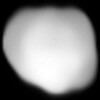
radius: {{val|112.5|2}} km diameter: None
{{val|2.41|0.32|e|=|19|u|=|kg}}
17.03.1852
None

radius: {{val|106.5|0.7|u|=|km}} diameter: None
{{val|8.292|0.010|e|=|18|u|=|kg}}
17 March 1899 & 16 August 1898
{{val|550.564636|u|=|d}}

radius: 97 ± 5.4 km diameter: None
~4.2 {{e|18}} kg (estimate) {{refn | name |=| mass estimate | group |=| lower-alpha | The mass estimate is based on the assumed density of 1.2 g/cm³, and a volume of 3.5 |e|6| km³ obtained from a detailed shape model in Stooke (1994).|ref| name="Stooke1994" |}} {{e|6}} km³ obtained from a detailed shape model in Stooke (1994).
24.05.1981
0.55465332 ± 0.00000001 d
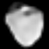
radius: None diameter: 186 km
None
01.07.1847
3.78 [[Julian year (astronomy)|a]] (1379.756 d)
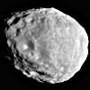
radius: {{val|89.5|1.4|u|=|km}} {{sfn|Thomas|2010}} diameter: None
{{val|1.8975|0.0012|e|=|18|u|=|kg}} {{sfn|Thomas|2010}}
15.12.1966
{{val|0.694660342|u|=|d}}
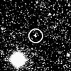
radius: None diameter: 108 km
167 km
167 km
None
30.08.1992
289.67 [[Julian year (astronomy)|yr]] (105,802 days)

radius: {{val|83.5|2.0|u|=|km}} {{sfn|Thomas Burns et al.|1998}} diameter: None
{{val|2.08|0.15|e|=|18|u|=|kg}} {{sfn|Anderson Johnson et al.|2005}}
09.09.1892
{{val|0.49817943|0.00000007|u|=|d}} {{nowrap|(11 h, 57 min, 23 s)}} {{sfn|Cooper Murray et al.|2006}}

radius: 81 ± 2 km {{sfn|Karkoschka, Voyager|2001}} diameter: None
~2.9 {{E-sp|18}} [[kilogram|kg]] {{efn|name|=|calculated}}
30.12.1985
0.76183287 ± 0.000000014 d {{sfn|Jacobson|1998}}

radius: {{val|58.1|1.8|u|=|km}} {{sfn|Thomas|2010}} diameter: None
{{val|5.266|0.006|e|=|17|u|=|kg}} {{sfn|Thomas|2010}}
18.12.1966
{{val|0.694333517|u|=|d}}

radius: {{val|49.3|2.0|u|=|km}} {{sfn|Thomas Burns et al.|1998}} diameter: None
None
05.03.1979
{{val|0.674536|0.000001|u|=|d}} (16 h 11.3 min) {{sfn|Cooper Murray et al.|2006}}

radius: {{nowrap|49 ± 1 km}} diameter: None
{{nowrap|1.700 ± 0.017|e|18| kg}} {{e|18}} kg
15.11.1852
3.80 [[Julian year (astronomy)|a]] (1387.902 d)

radius: 46.8 ± 4 km diameter: None
~5.6 {{E|17}} kg {{efn|name|=|calculated}}
03.01.1986
0.493065490 ± 0.000000012 d

radius: {{val|43.1|2.7|u|=|km}} {{sfn|Thomas|2010}} diameter: None
{{val|1.595|0.015|e|=|17|u|=|kg}} {{sfn|Thomas|2010}}
01.10.1980
{{val|0.612990038|u|=|d}}

radius: {{val|40.7|1.5|u|=|km|s|=| }} {{sfn|Thomas|2010}} diameter: None
{{val|1.371|0.019|e|=|17|u|=|kg}} {{sfn|Thomas|2010}}
01.10.1980
{{val|0.628504213|u|=|d}}

None
None
12.11.1885
4.31 [[Julian year (astronomy)|yr]] (1574.3 [[Julian year (astronomy)|d]])

radius: {{val|21.5|2.0|u|=|km}} {{sfn|Thomas Burns et al.|1998}} diameter: None
{{val|1.2|e|=|17|u|=|kg}}
04.03.1979
{{val|0.294780|u|=|d}} {{nowrap|(7 h, 4.5 min)}} {{sfn|Evans Porco et al.|2002}} {{sfn|Burns Simonelli et al.|2004}}


radius: {{val|17.6|0.4|u|=|km}} {{sfn|Thomas|2010}} diameter: None
None
01.03.1980
{{val|2.736915|u|=|d}}

radius: None diameter: {{val|18.3|u|=|km}} {{small|(volume equivalent)}}
''Ultima'' {{val|15.9|u|=|km}}
''Thule'' {{val|12.9|u|=|km}}
''Ultima'' {{val|15.9|u|=|km}}
''Thule'' {{val|12.9|u|=|km}}
None
26.06.2014
298 [[Julian year (astronomy)|yr]]


radius: {{val|15.1|0.9|u|=|km|s|=| }} {{sfn|Thomas|2010}} diameter: None
{{val|6.60|0.45|e|=|15|u|=|kg}} {{sfn|Thomas|2010}}
01.10.1980
{{val|0.6016947883|u|=|d}}

radius: {{val|14.1|1.3|u|=|km}} diameter: None
{{val|4.95|0.75|e|=|15|u|=|kg}}
16.07.1990
{{val|0.575050718|u|=|days}} ( {{val|13.801217|u|=|hours}} )

radius: {{val|12.4|0.4|u|=|km}} {{sfn|Thomas|2010}} diameter: None
None
08.04.1980
{{val|1.887802|ul|=|d}}

radius: {{val|11.2667|u|=|km}}
( {{val|1.76941|u|=|[[milli-|m]]Earths}} ) diameter: None
( {{val|1.76941|u|=|[[milli-|m]]Earths}} ) diameter: None
{{val|1.0659|e|=|16|u|=|kg}}
( {{val|1.78477|u|=|nEarths}} )
( {{val|1.78477|u|=|nEarths}} )
18.08.1877
{{val|0.31891023|ul|=|d}}
(7 h 39.2 min)
(7 h 39.2 min)

radius: {{val|10.7|0.7|u|=|km}} {{sfn|Thomas|2010}} diameter: None
None
13.03.1980
{{val|1.887802|u|=|d}}

None
{{val|1.65e16|u|=|kg}} {{refn|group|=|notes|Derived from the published value of ''GMKerberos'' |=| |val|0.0011|0.0006|u|=|km3/s2| |ref|{{cite journal|last1=Brozović|first1=Marina|last2=Showalter|first2=Mark R.|last3=Jacobson|first3=Robert A.|last4=Buie|first4=Marc W.|title=The orbits and masses of satellites of Pluto|journal=Icarus|date=January 2015|volume=246|pages=317–329|doi=10.1016/j.icarus.2014.03.015|bibcode = 2015Icar..246..317B }}|| and the relationship ''MKerberos'' |=| |sfrac|''GMKerberos'' |''[[Gravitational constant|G]]''|}} {{=}} {{val|0.0011|0.0006|u|=|km3/s2}} and the relationship ''MKerberos'' {{=}} {{sfrac|''GMKerberos'' |''[[Gravitational constant|G]]''}}
28 June 2011
(verified 20 July 2011)
(verified 20 July 2011)
{{val|32.16756|0.00014|ul|=|d}}

radius: 6.2 ± 0.18 km
(0.97316 [[milli-|m]]Earths) diameter: None
(0.97316 [[milli-|m]]Earths) diameter: None
{{val|1.4762|e|=|15|u|=|kg}}
(0.247179 [[nano-|n]]Earths)
(0.247179 [[nano-|n]]Earths)
12.08.1877
{{val|1.263|ul|=|d}}
(30.312 [[Hour|h]])
(30.312 [[Hour|h]])

None
2– {{val|3|x|10}} 16 kg {{small|(estimate)}}
30.07.1916
3.29 [[Julian year (astronomy)|yr]] (1,200 days)

radius: None diameter: {{val|11|u|=|km}}
{{val|2.2|e|=|14|ul|=|kg}}
1758 (first ''predicted'' perihelion)
75.32 [[Julian year (astronomy)|yr]]
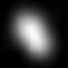
None
{{val|7.5e15|u|=|kg}}
{{plainlist |
* 26 June 2012
* (verified 7 July 2012)}}
{{val|20.16155|0.00027|ul|=|d}}
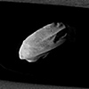
radius: {{val|3.8|0.8|u|=|km}} diameter: None
{{val|7.7|1.5|e|=|13|u|=|kg}}
06.05.2005
{{val|0.5940798|u|=|days}} ( {{val|14.257915|u|=|hours}} )


radius: 2.4 km diameter: None
2 {{e|13}} [[Kilogram|kg]]
28.12.1904
6.8 [[Julian year (astronomy)|a]]

radius: None diameter: {{val|4.92|0.40|ul|=|km}}
{{val|5.160|0.167|u|=|km}}
{{val|5.160|0.167|u|=|km}}
None
04.11.1969
3.63 yr (1,327 d)


None
{{val|9.982|0.003|e|=|12|u|=|kg}}
20.09.1969
6.44 [[Julian year (astronomy)|yr]]
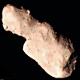
radius: None diameter: {{val|2.45}} km
5.4 km {{small|(dated)}}
5.4 km {{small|(dated)}}
{{val|5.05|e|=|13|u|=|kg}}
04.01.1989
4.03 [[Julian year (astronomy)|yr]] (1,472 days)

radius: {{val|1.45|0.03|u|=|km}} {{sfn|Thomas|2013}} diameter: None
None
01.06.2004
{{val|1.009573975|ul|=|d}}


radius: None diameter: {{val|1.1|ul|=|km}}
{{val|1.25|0.12|u|=|km}}
{{val|2.00|0.20|u|=|km}}
{{val|1.25|0.12|u|=|km}}
{{val|2.00|0.20|u|=|km}}
> {{val|4|e|=|12|ul|=|kg}} {{efn|name|=|estimate}}
23.02.1950
2.21 yr (809 d)
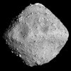
radius: None diameter: {{val|0.865|0.015|ul|=|km}}
{{val|0.87|u|=|km}}
{{val|0.90|0.14|u|=|km}}
{{val|0.92|0.12|u|=|km}}
{{val|0.980|0.029|u|=|km}}
{{val|1.13|0.03|u|=|km}}
{{val|0.87|u|=|km}}
{{val|0.90|0.14|u|=|km}}
{{val|0.92|0.12|u|=|km}}
{{val|0.980|0.029|u|=|km}}
{{val|1.13|0.03|u|=|km}}
{{val|4.5|e|=|11|u|=|kg}}
10.05.1999
1.30 yr (474 d)
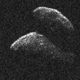
radius: None diameter: 0.72 km {{small|(est. at [[Geometric albedo|0.20]])}}
0.818 km {{small|(calculated)}}
0.818 km {{small|(calculated)}}
None
05.05.2014
2.97 [[Julian year (astronomy)|yr]] (1,086 days)

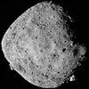
radius: {{val|245.03|0.08|u|=|m}} diameter: None
{{val|7.329|0.009|e|=|10|u|=|kg}}
11.09.1999
1.20 [[Julian year (astronomy)|yr]] (436.65 [[Julian year (astronomy)|d]])

radius: None diameter: 313 m
330 m
350 m
330 m
350 m
{{val|3.51|0.105|e|=|10|ul|=|kg}}
{{val|3.58|0.18|e|=|10|u|=|kg}}
{{val|3.58|0.18|e|=|10|u|=|kg}}
26.09.1998
1.52 yr (557 d)

None
None
[[Lincoln Laboratory's ETS|Lincoln Lab's ETS]]
2.72 [[Julian year (astronomy)|yr]] (992 days)


radius: 0.1625 ± 0.035 km diameter: None
None
23.04.2014
0.78 [[Julian year (astronomy)|yr]] (286.7 [[Julian year (astronomy)|d]])

None
None
10.10.2015
3.04 [[Julian year (astronomy)|yr]] (1112.0 [[Julian year (astronomy)|d]])
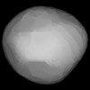
radius: None diameter: {{val|128|u|=|km}}
None
18.10.1847
1193.549 d (3.27 [[Julian year (astronomy)|a]])


None
{{val|5.81|1.97|e|=|19|ul|=|kg}}
01.09.1854
5.61 [[Julian year (astronomy)|yr]] (2041.585 d)

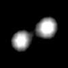
None
8.3×1017 kg
(whole system)
~ 4.1−4.2 {{e|17}} kg (components)
(whole system)
~ 4.1−4.2 {{e|17}} kg (components)
01.10.1866
2046.9 d (5.60 [[Julian year (astronomy)|yr]])

radius: 95 km diameter: None
5.38 ± 0.3 {{e|18}} kg
5.4 ± 0.3 {{e|18}} kg
5.4 ± 0.3 {{e|18}} kg
12.05.1872
6.40 yr (2,338 d)

radius: None diameter: {{val|102.93|3.81|ul|=|km}}
{{val|104.3|u|=|km}}
{{val|121.55|1.60|u|=|km}}
{{val|124|u|=|km}}
{{val|135.07|2.1|u|=|km}}
{{val|137.794|u|=|km}}
{{val|138.000|19.37|u|=|km}}
{{val|104.3|u|=|km}}
{{val|121.55|1.60|u|=|km}}
{{val|124|u|=|km}}
{{val|135.07|2.1|u|=|km}}
{{val|137.794|u|=|km}}
{{val|138.000|19.37|u|=|km}}
{{val|4.64e18|0.02|ul|=|kg}}
10.04.1880
4.67 yr (1,706 d)

radius: None diameter: {{val|289|21|ul|=|km}}
None
30.05.1903
5.63009883 [[Julian year (astronomy)|yr]] (2056.393597 d)

radius: None diameter: {{val|1.77|0.1}} [[Kilometre|km]]
{{val|1.87|0.05}} km
{{val|1.96|0.06}} km
{{val|2.5}} km
{{val|2.56|0.15}} km
{{val|1.87|0.05}} km
{{val|1.96|0.06}} km
{{val|2.5}} km
{{val|2.56|0.15}} km
None
14.09.1951
1.39 [[Julian year (astronomy)|yr]] (508 days)

radius: 0.265 ± 0.015 km diameter: None
2.10 × 1011 kg
10.05.1991
3.97 [[Julian year (astronomy)|yr]] (1450.1 [[Julian year (astronomy)|d]])

radius: 56.385 ± 1.55 km diameter: None
None
13.09.1850
3.56 [[Julian year (astronomy)|yr]] (1302.0 [[Julian year (astronomy)|d]])

radius: 103.82 ± 4.15 km diameter: None
None
02.11.1850
4.14 [[Julian year (astronomy)|yr]] (1510.9 [[Julian year (astronomy)|d]])


None
1.2 {{e|18}} kg {{efn|name|=|Thetismass2007}}
17.04.1852
3.88 [[Julian year (astronomy)|yr]] (1,419 days)

radius: None diameter: {{val|1.0}} km {{efn|name|=|Gehrels}}
{{val|1.03|0.04}} km
{{val|1.27}} km
{{val|1.417|0.123}} km
{{val|1.44|0.26}} km
{{val|1.03|0.04}} km
{{val|1.27}} km
{{val|1.417|0.123}} km
{{val|1.44|0.26}} km
None
27.06.1949
1.12 [[Julian year (astronomy)|yr]] (408.87 days)


radius: 0.7 km diameter: None
None
09.08.1989
1.10 [[Julian year (astronomy)|yr]] (400.46 [[Julian year (astronomy)|d]])